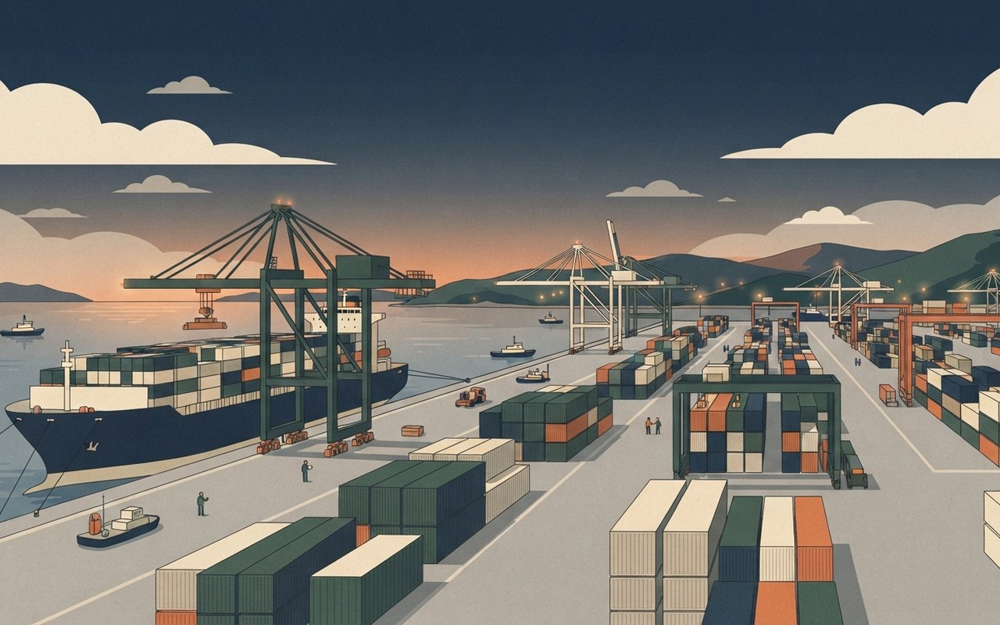
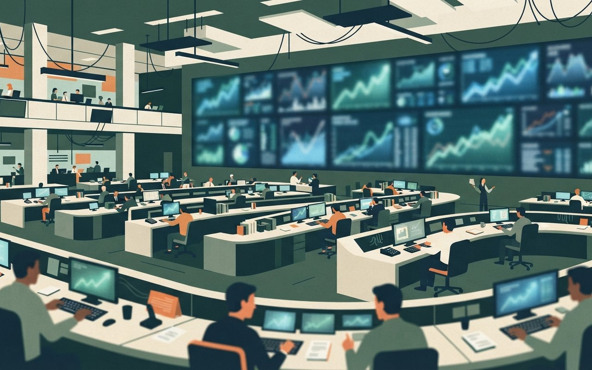
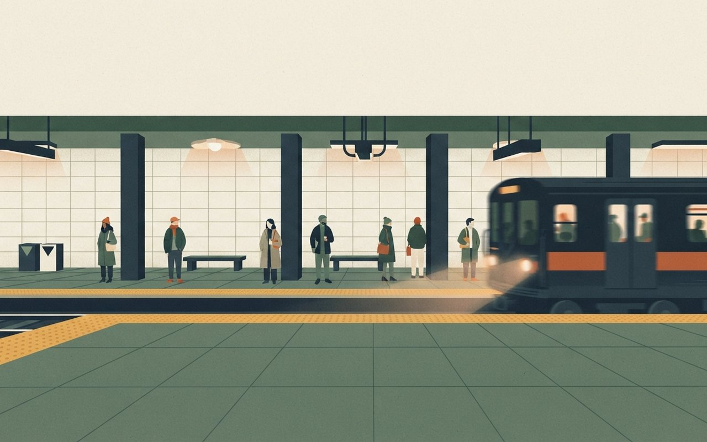

🎧 낭독 원고 보기
11월 20일 금요일, 데일리 브리프입니다. 오늘은 여섯 가지 소식을 전해 드립니다.
대법원이 12·3 비상계엄을 형법상 내란으로 처음 판단했습니다. 다만 한덕수 전 국무총리가 계엄 선포 전에 국무회의 소집을 건의한 부분은 국헌 문란의 목적을 인정하기 어렵다며 무죄 취지로 서울고법에 돌려보냈습니다. 그래서 2심의 징역 15년은 확정되지 않았고, 구속기간은 2개월 연장됐습니다. 선포 뒤 국무위원 서명을 받으려 한 부분과 위증 등은 유죄가 유지됐습니다. 민주당은 조희대 대법원장 탄핵을 추진하기로 하고, 오늘 의원총회에서 당론 채택을 논의합니다.
김건희 씨는 징역 4년과 벌금 5,000만 원이 확정됐습니다. 도이치모터스 주가조작과 금품수수 혐의는 유죄, 명태균 씨의 무상 여론조사 혐의는 무죄로 끝났습니다. 김 씨는 1심에서 징역 1년 8개월을 받았지만 2심에서 징역 4년으로 늘었고, 대법원이 이를 그대로 확정했습니다. 김 씨 변호인은 결과에 승복한다며 재판소원은 하지 않겠다고 했습니다. 한국일보에 따르면 전·현직 대통령 배우자가 실형을 확정받은 것은 헌정사상 처음입니다.
한국의 올해 수출이 처음으로 1조 달러를 넘었습니다. 독일, 미국, 중국에 이어 세계 네 번째입니다. 1964년 1억 달러에서 62년 만입니다. 반도체가 이끌었습니다. 1월부터 10월까지 반도체 수출은 3,968억 달러로, 전체 수출에서 차지하는 비중이 1년 전 23퍼센트에서 43퍼센트로 커졌습니다. 다만 3분기 수출 증가율은 대기업이 104퍼센트, 중소기업은 11퍼센트로 차이가 컸습니다.
미국, 중국, 러시아 정상이 중국 선전에서 사상 첫 3자 정상회담을 열고 1시간 30분 만에 평화선언을 냈습니다. 핵전쟁은 결코 해서는 안 된다는 원칙과 핵 위험 감축, 유엔 개혁 등 네 개 항이 담겼습니다. 다만 구체적인 이행 계획은 없고, 우크라이나와 이란 전쟁은 선언에 들어가지 않았습니다.
클로드를 만드는 앤트로픽이 나스닥에 상장했습니다. 공모가는 83달러였고, 첫 거래는 34퍼센트 높은 111.5달러에서 시작했습니다. 장중 114.99달러까지 올랐다가 오후에는 95달러 안팎으로 상승 폭이 줄었습니다. 조달 금액은 800억 달러 안팎으로, 매체들은 6월 스페이스X를 넘는 역대 최대 공모라고 전했습니다.
서울교통공사 노조가 오늘 첫차부터 준법투쟁에 들어갑니다. 뉴스1에 따르면 교섭이 결렬되면 25일부터 무기한 파업에 들어갈 계획이고, 노조는 안전 인력 1,313명 채용을 요구하고 있고, 공사는 하루 3,183회 운행을 정상대로 유지하겠다고 밝혔습니다.
끝으로 오늘 서울 날씨입니다. 아침 최저 영하 3도, 낮 최고 3도로 종일 춥겠습니다. 서울에는 비나 눈 소식이 없습니다.
이상으로 오늘의 데일리 브리프를 마칩니다. 자세한 내용과 출처는 카드에서 확인하세요.
判
대법원 전원합의체 · 파기환송
대법원, 12·3 계엄 '내란' 첫 판단 — 한덕수 '국무회의 소집 건의'는 무죄 취지 파기환송, 2심 징역 15년 미확정
대법원 전원합의체는 19일 한덕수 전 국무총리의 내란 사건 상고심에서 원심 일부를 깨고 사건을 서울고법으로 돌려보냈다. 계엄 선포 전 국무회의 소집을 건의하고 국무위원 출석을 독촉한 부분은 "국헌 문란 목적이 있었다고 단정하기 어렵다"며 무죄 취지로 판단했다(한국일보). 대법원이 12·3 비상계엄을 형법상 내란으로 판단한 것은 처음이다(경향신문).
선포 뒤 국무위원 서명을 받으려 한 행위, 계엄 선포문 사후 작성, 탄핵심판 위증 부분은 유죄가 유지됐다(경향신문). 한 전 총리는 1심 징역 23년, 2심 징역 15년을 받았는데 이번 파기로 형은 확정되지 않았고, 구속기간은 2개월 연장됐다(한국일보). 민주당은 조희대 대법원장 탄핵을 추진하기로 하고 20일 의원총회에서 당론 채택을 논의한다. 김민석 대표는 "가장 명료한 역사적 탄핵 사유가 생겼다"고 말했다(경향신문).
- 판결19일 대법원 전원합의체 · 일부 파기, 서울고법 환송(미확정)
- 무죄 취지계엄 선포 전 국무회의 소집 건의·출석 독촉 — 국헌 문란 목적 단정 어려움
- 유죄 유지선포 뒤 국무위원 서명 시도 · 선포문 사후 작성 · 탄핵심판 위증
- 형량 경과1심 징역 23년 → 2심 징역 15년 → 파기환송 · 구속기간 2개월 연장
- 정치권민주당 조희대 대법원장 탄핵 추진 · 20일 의원총회 당론 채택 논의(소추안 발의 전)
- 확인 한계대법관 의견 수는 매체마다 달리 적어 싣지 않음
Context · 맥락 읽기
파기환송은 무죄 확정이 아니다. 서울고법이 다시 재판해 형량을 새로 정해야 하고, 유죄로 남은 부분도 있다. 탄핵은 아직 '추진' 단계로, 소추안은 발의되지 않았다.
경향신문 — 한덕수 상고심 뉴스1 — '계엄 위헌·위법' 판단 경향신문 — 조희대 탄핵 추진
경향신문(11/19 17:08·22:25)·뉴스1(11/19 18:57)·한국일보(11/19 19:00, 다음 카드 출처) · 형량 경과는 경향·한국일보 일치 · 대법관 다수·반대 수는 매체 표기가 달라 생략 (확인 2026-11-20)
한덕수 일부 무죄 취지,
2심 15년 확정 안 됐다
대법원은 12·3 계엄을 내란으로 처음 판단했지만, 국무회의 소집 건의는 무죄 취지로 돌려보냈어요. 서울고법이 형량을 다시 정해요.
국무회의 소집 건의|무죄 취지|서울고법 다시 재판
서명 시도·사후 작성·위증은 유죄 유지
刑
상고심 확정 · 대통령 배우자
김건희 징역 4년·벌금 5,000만 원 확정 — 주가조작·금품수수 유죄, 명태균 여론조사는 무죄 확정
대법원은 19일 김건희 씨에게 징역 4년과 벌금 5,000만 원을 선고한 원심을 확정했다. 도이치모터스 주가조작(자본시장법 위반)과 통일교 금품수수(특가법상 알선수재)는 유죄, 명태균 씨의 무상 여론조사(약 2억 7,440만 원, 정치자금법 위반)는 무죄가 확정됐다. 한국일보는 "전·현직 대통령 배우자 중 실형 확정 판결을 받은 건 헌정사상 이번이 처음"이라고 전했다.
뉴스1에 따르면 대법원은 무상 여론조사를 "정치자금 기부가 아니다"라고 봤다. 김 씨 변호인은 "결과에 승복한다"며 재판소원은 하지 않겠다고 했고, 특검은 "형사책임이 명확히 인정됐다"고 밝혔다. 김 씨는 1심 징역 1년 8개월, 2심 징역 4년을 받았다(YTN).
- 확정징역 4년 · 벌금 5,000만 원(19일 대법원)
- 유죄도이치모터스 주가조작 · 통일교 금품수수(뉴스1은 '샤넬백'으로 표기)
- 무죄 확정명태균 무상 여론조사 약 2억 7,440만 원 — "정치자금 기부 아니다"
- 형량 경과1심 징역 1년 8개월 → 2심 징역 4년 → 확정
- 반응변호인 "결과 승복, 재판소원 안 해" · 특검 "형사책임 명확히 인정"
Context · 맥락 읽기
2심에서 형이 두 배 넘게 늘었고, 대법원은 이를 그대로 확정했다. 여론조사 무죄 확정은 같은 쟁점이 걸린 다른 정치자금 사건에도 판단 기준이 될 수 있다.
한국일보 — 김건희 확정·한덕수 환송 뉴스1 — 김건희 징역 4년 확정 YTN — 1·2심 형량
한국일보(11/19 19:00)·뉴스1(11/19 19:34)·YTN(11/19 00:52) · 징역 4년·벌금 두 매체 일치 · 유죄 항목 이름은 매체마다 다름 · 추징금은 확인 못 해 뺌 (확인 2026-11-20)
김건희 징역 4년 확정,
대통령 배우자 첫 실형
주가조작과 금품수수는 유죄, 명태균 무상 여론조사는 무죄로 끝났어요. 김 씨 변호인은 결과에 승복하고 재판소원은 안 한다고 했어요.
1심 1년 8개월|2심 징역 4년|19일 확정
5,000만 원|벌금 · 함께 확정
輸
산업통상부 · 19일 돌파
한국 연간 수출 첫 1조 달러 — 독일·미국·중국 이어 세계 4번째, 1964년 1억 달러에서 62년 만
산업통상부는 올해 누적 수출이 19일 오후 2시 9분 38초에 1조 달러를 넘었다고 밝혔다. 독일·미국·중국에 이어 네 번째다. 1964년 1억 달러에서 62년 만에 약 1만 배가 됐고, 지난해 처음 7,000억 달러를 넘은 데 이어 1년 만에 1조 달러에 닿았다(경향신문). 뉴스1은 "일본보다 먼저"라고 전했다.
반도체가 이끌었다. 1~10월 반도체 수출은 3,968억 달러로 1년 전 같은 기간의 2.9배이고, 전체 수출에서 차지하는 비중은 23%에서 43%가 됐다. 물량보다 가격 덕이 컸다. 10월 DDR5 16Gb 고정가격은 1년 전의 5.8배였다. 중소기업 수출은 1~10월 1,076억 달러로 역대 최대지만, 3분기 증가율은 11%로 대기업(104%)의 약 10분의 1이었다(경향신문).
- 돌파 시각11월 19일 14:09:38 · 누적 1조 달러 · 세계 4번째(독일·미국·중국 다음)
- 경과1964년 1억 달러 → 지난해 7,000억 달러 돌파 → 올해 1조 달러(62년, 약 1만 배)
- 반도체(1~10월)3,968억 달러 · 1년 전의 2.9배 · 비중 23% → 43%
- 가격DDR5 16Gb 고정가격(10월) 1년 전의 5.8배
- 중소기업1~10월 1,076억 달러(역대 최대) · 3분기 증가율 11% vs 대기업 104%
Marketing View · 마케터의 시선
1조 달러의 절반 가까이가 반도체, 그것도 물량보다 가격이었다. 메모리 값이 꺾이면 숫자도 함께 꺾인다는 뜻이다. '1조 달러' 축하 마케팅을 준비하는 쪽이라면 대기업 104%와 중소기업 11%의 간극까지 함께 읽어야 메시지가 공허해지지 않는다.
경향신문 — 수출 1조 달러·반도체 43% 뉴스1 — 세계 4위
경향신문(11/19 14:29, 15:01 수정)·뉴스1(11/19 15:25) · 세계 4번째·62년은 두 매체 일치 · 반도체·중소기업 수치는 경향 기준 (확인 2026-11-20)
수출 첫 1조 달러,
독일·미·중 이어 4번째
독일·미국·중국 다음이에요. 1~10월 반도체 수출이 3,968억 달러로 1년 전의 2.9배가 됐고, 전체 수출 중 비중이 43%까지 올랐어요.
43|3,968억 달러|반도체 수출(1~10월)|전체 수출 중 비중 · 1년 전 23%
Wide view of a Korean container port at dusk, stacked shipping containers and gantry cranes, a cargo ship docking, flat illustration, no text, no logos

2.9배|반도체 수출 · 1년 전 같은 기간 대비
和
중국 선전 치린산장
미·중·러 사상 첫 3자 정상회담, '평화선언' 4개 항 — 핵 위험 감축·유엔 개혁, 우크라이나·이란 전쟁은 빠져
트럼프 미국 대통령과 시진핑 중국 국가주석, 푸틴 러시아 대통령이 19일 중국 선전 치린산장에서 약 1시간 30분 회담하고 '미·중·러 정상 평화선언'을 냈다. ①핵전쟁은 이길 수 없고 결코 해서는 안 된다는 원칙 재확인과 핵 위험 감축·핵확산 방지 대화 ②국제형사재판소(ICC) 등의 관할권 남용 반대 ③석유제품 생산·공급 확대 ④안보리 상임이사국으로서 유엔 개혁 등 4개 항이다(경향신문).
시진핑 주석은 "궁극적으로 핵무기 없는 세상을 만들어야 한다"고 했고, 트럼프 대통령은 "이란이 핵무기를 보유하도록 허용하지 않을 것"이라고 말했다(경향신문). 한국일보는 선언에 구체적 이행 계획이 없고 우크라이나·이란 전쟁도 담기지 않았다고 짚었다. 신화통신은 한반도 정세도 논의했다고 전했지만 선언문에는 한반도가 없다(한국일보).
- 회담19일 · 중국 선전 치린산장 · 약 1시간 30분 · 사상 첫 미·중·러 3자 정상회담
- 평화선언4개 항 — 핵 위험 감축·핵확산 방지 대화 · ICC 등 관할권 남용 반대 · 석유제품 공급 확대 · 유엔 개혁
- 빠진 것구체적 이행 계획 · 우크라이나·이란 전쟁
- 한반도신화통신 "정세 논의" 전언 · 선언문에는 없음
Context · 맥락 읽기
세 정상이 한자리에 앉았다는 사실은 크지만, 선언은 원칙과 대화 약속에 머물렀다. 실제 핵 감축 협상이 열리는지가 다음 확인 지점이다. 한반도는 '논의했다'는 전언만 있어 우리 쪽에 어떤 뜻인지는 아직 알 수 없다.
경향신문 — 미·중·러 평화선언 한국일보 — 이행 계획 없어
경향신문(11/19 22:25)·한국일보(11/19 21:04) · 회담 시간·선언 항목 두 매체 일치 · 한반도 논의는 신화통신 전언 (확인 2026-11-20)
미·중·러 첫 3자회담,
평화선언 4개 항
선전에서 1시간 30분 만나 핵 위험 감축과 유엔 개혁 등을 담았어요. 구체적 이행 계획은 없고 우크라이나·이란 전쟁은 빠졌어요.
미·중·러 정상|19일 회담|평화선언 4개 항
1시간 30분|선전 치린산장 회담 시간
株
나스닥 · 클로드 개발사
앤트로픽 나스닥 첫날, 공모가 83달러보다 34% 높은 111.5달러 출발 — 공모 규모 800억 달러 안팎 '역대 최대'
AI '클로드' 개발사 앤트로픽이 19일(현지) 미국 나스닥에 상장했다. 공모가는 83달러로 희망 범위(70~78달러)보다 높게 정해졌고(한국일보), 첫 거래는 34% 높은 111.5달러에서 시작해 장중 114.99달러까지 올랐다(CBS). 오후 2시 20분(현지) 무렵에는 약 95달러로 공모가보다 14% 높았다(CBS). 시초가 기준 시가총액은 약 2조 달러였다(포천, 공모가 기준 1조 5,000억 달러).
공모 규모는 CBS가 813억 달러, 포천이 790억 달러(내부자 매도분 포함 814억 달러)로 적었다. 두 매체 모두 6월 스페이스X 공모액 750억 달러를 넘는 역대 최대라고 전했다. 한국일보는 상장으로 'AI 백만장자'가 약 2,800명 생길 것이라는 시장조사업체 사크라의 추정을 소개했다.
- 공모가83달러(희망 범위 70~78달러 상회)
- 첫날시초가 111.5달러(+34%) · 장중 최고 114.99달러 · 오후 2시 20분(현지) 약 95달러(+14%)
- 공모 규모813억 달러(CBS) · 790억 달러, 내부자 포함 814억 달러(포천) · 스페이스X 750억 달러 넘어
- 시가총액시초가 기준 약 2조 달러 · 공모가 기준 1조 5,000억 달러(포천)
- 확인 한계종가는 발행 시점에 확인 못 함 ⚠ 주가 변동
Marketing View · 마케터의 시선
시초가 +34%가 오후엔 +14%로 줄었다. 첫날 열기와 실제 값이 다를 수 있다는 신호다. 'AI 백만장자 2,800명' 같은 추정치는 화제성은 크지만, 추정 주체와 기준을 함께 써야 신뢰를 잃지 않는다.
CBS News — 나스닥 첫날 Fortune — 공모 규모·시가총액 한국일보 — 공모가 83달러
CBS(11/19 14:30 EST 갱신)·Fortune(11/19 10:28 ET)·한국일보(11/19 07:25) · 공모가·시초가 일치 · 공모 규모는 매체별 표기 불일치(813억·790억/814억) · 종가 미확인 (확인 2026-11-20)
앤트로픽 상장 첫날,
공모가보다 34% 높게
공모가 83달러, 첫 거래는 111.5달러에서 시작해 장중 114.99달러까지 갔어요. 오후엔 약 95달러로 상승 폭이 줄었어요.
공모가:83|시초가:111.5|장중 최고:114.99
+14%|오후 2시 20분(현지) · 공모가 대비
A busy stock exchange trading floor with traders and large blurred market screens glowing in blue and green, abstract upward chart shapes, flat illustration, no text, no readable numbers, no logos

鐵
서울지하철 · 노사 교섭
서울지하철 노조, 오늘 첫차부터 준법투쟁 — 교섭 결렬 땐 25일부터 무기한 파업
서울교통공사 노조가 20일 첫차부터 '안전운행 투쟁'(준법투쟁)에 들어간다. 노조는 인력 감축 철회와 안전 인력 1,313명 채용을 요구하고 있고, 교섭이 결렬되면 25일부터 무기한 파업에 들어갈 계획이다(뉴스1).
서울교통공사는 하루 3,183회 운행을 정상적으로 유지하겠다고 밝혔다. 뉴스1에 따르면 준법투쟁에 함께하는 다른 노선으로는 GTX-A가 언급됐다. 뉴스1은 출퇴근길 일부 지연이 우려된다고 전했다.
- 준법투쟁20일(금) 첫차부터 · 서울교통공사 노조 '안전운행 투쟁'
- 파업 예고교섭 결렬 시 25일(수)부터 무기한
- 요구인력 감축 철회 · 안전 인력 1,313명 채용
- 공사하루 3,183회 정상 운행 유지 방침
- 확인 한계뉴스1 단일 보도 ⚠ 교섭 결과에 따라 변동
Marketing View · 마케터의 시선
출근 시간이 몇 분씩 늘어나는 날에는 '조금 일찍 출발하세요' 같은 안내 한 줄이 가장 쓸모 있는 콘텐츠가 된다. 25일 파업 여부는 그 전 교섭 결과로 갈린다.
뉴스1 — 서울지하철 준법투쟁
뉴스1(11/19 17:30) · 단일 매체 (확인 2026-11-20)
서울지하철 준법투쟁,
25일엔 파업 예고
오늘 첫차부터 노조가 준법투쟁에 들어가요. 공사는 하루 3,183회 운행을 유지한다고 했지만, 교섭이 결렬되면 25일부터 무기한 파업이에요.
20일 준법투쟁|25일 파업 예고
1,313명|노조 요구 안전 인력 채용
Commuters waiting on a subway platform in the early morning as a train arrives, calm everyday mood, flat illustration, no text, no logos, no signage
